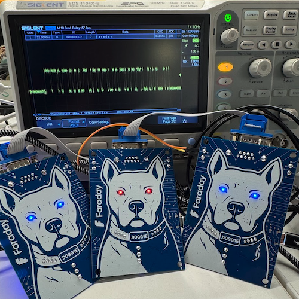
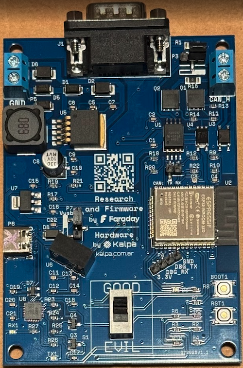

Doggie/evilDoggie Board - Faraday Edition
Introduction
The Faraday Doggie & evilDoggie Board is a professional-grade, dual-purpose CAN Bus adapter and research tool designed by Faraday in collaboration with Kalpa. This board offers a readymade, plug-and-play solution for CAN Bus analysis and security research. The board's design allows it to function as both a standard Doggie CAN Bus adapter and an evilDoggie research and testing tool, switching between modes via a hardware toggle.

Hardware
The board uses a ESP32-WROOM-32D microcontroler with 8 Mb of flash, allowing it to store both Doggie and evilDoggie firmwares simultaneously. The switch labelled Evil/Good can be used to switch betweeen the firmware images. The eye color provides visual confirmation of the selected firmware image (red for evil and blue for good).
CAN Bus Interface
The CAN communication stack comprises two critical components:
- ESP32 internal CAN-compatible controller (TWAI - Two-Wire Automotive Interface)
- External CAN tranceiver:
- ISO1042DWVR Isolated CAN Transceiver
- Galvanic isolation up to 2.5 kV for electrical protection
- Enhanced ESD protection (±12 kV contact discharge)
- Wide common-mode range (-12V to +12V) for automotive environments
- Thermal shutdown protection and short-circuit immunity
- Low electromagnetic emissions compliant with automotive EMC standards
Connectivity Options
CAN Network Connection:
- Screw terminal blocks for internal bus connection or permanent installation
- DB9 connector for standard automotive/industrial applications
- DB9-to-OBD2 adapter compatibility for direct vehicle connection
- Jumper-selectable 120Ω termination resistor
Host Connection:
- USB-C connector with integrated USB-to-Serial bridge
Power Management System
Power Source Selection: - USB-C 5V Bus Power (Jumper in Vusb position) - Automotive 12V Rail (via OBD2 or terminal block. Jumper not in Vusb position) - External DC Supply (6V-24V via terminal block. Jumper not in Vusb position)
Advanced Features
Dominant Override Circuit:
- Allows to force messages and custom states
- Custom fast-switching transistor implementation
- Essential for advanced security testing scenarios
- Electronically controlled via firmware commands

The hardware bill of materials and schematics are available in the repo's hardware directory.